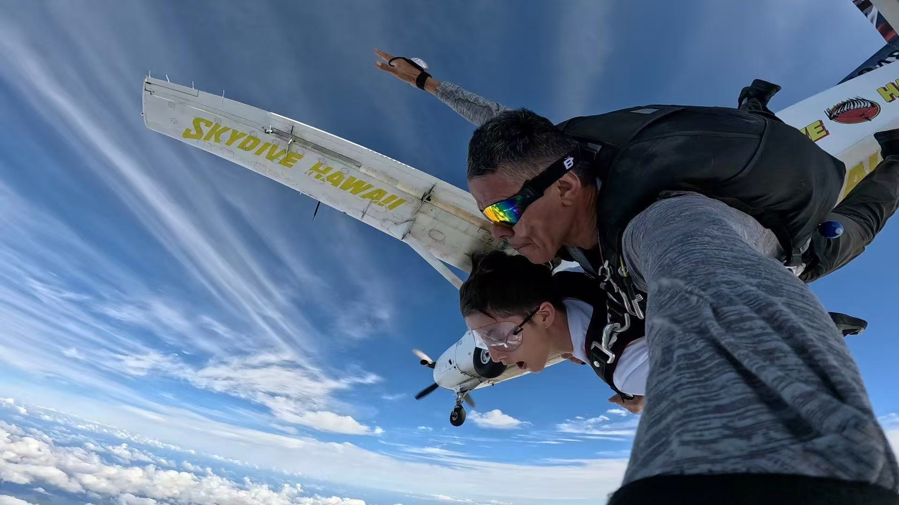
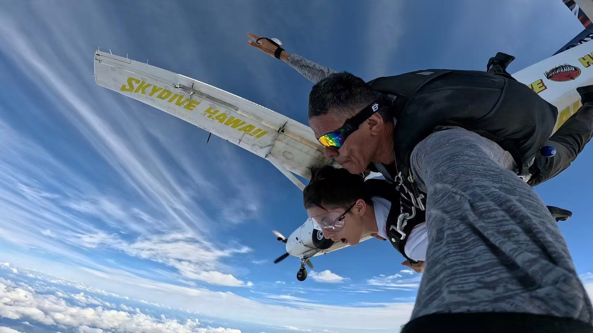

Ziqin Wang
PhD Student · Aquatic Biosciences · University of Tokyo
I am a second-year PhD candidate focusing on bioenergetics and population dynamics of small pelagic fishes in the Northwest Pacific. My work blends process-based modeling with observational datasets to understand how ocean circulation—particularly the Kuroshio and its large meander—shapes early life growth, migration, and year-class strength of Scomber japonicus (chub mackerel).
Education
-
2024.04–2027.03 PhD course of Science in Agriculture in Aquatic Bioscience — The University of Tokyo
Supervisor: Shin-ichi Ito -
2021.04–2023.03 Master of Science in Agriculture in Aquatic Bioscience — The University of Tokyo
Supervisor: Shin-ichi Ito -
2016.09–2020.06 B.S. in Marine Resources and Environment — The Ocean University of China (OUC; 985 & 211)
Supervisor: Yongjun Tian
Workshops & Practice
- 2022/08/08–2022/08/10 Early Career Ocean Professionals Conference of Japanese Oceanographic Symposium — Yamagata, Japan
- 2023/09/04–2023/09/06 Macro Coastal Oceanography Summer School — Shonan Village Center, Kanagawa, Japan
- 2024/08/26–2024/08/30 Asia-Pacific Network’s (APN) Proposal Development Training Workshop (PDTW) for ECPs — Suva, Fiji
- 2024/10/01–2024/12/01 Exchanging program (building up a model for Pacific mackerel in California Current System) — University of California, Santa Cruz, US
Conferences
- [1] 2021.11 *Ziqin Wang & Shin-ichi Ito: Development of a coupling model of bioenergetics and population dynamics: example of Pacific chub mackerel, Japanese Society of Fisheries Oceanography Fall Meeting, Japan.
- [2] 2022.05 *Ziqin Wang, Shin-ichi Ito, Yabe Itsuka & Chenying Guo: Development of a coupling model of bioenergetics and population dynamics: example of Pacific chub mackerel, JpGU 2022, Makuhari MESSE, Chiba, Japan.
- [3] 2022.11 *Ziqin Wang, Shin-ichi Ito, Yabe Itsuka & Chenying Guo: Development of a bioenergetics and population dynamics coupled model: An example of chub mackerel, SPF-PICES, Lisbon, Portugal.
- [4] 2023.10 *Ziqin Wang, Shin-ichi Ito, Yabe Itsuka & Chenying Guo: Development of a bioenergetics and population dynamics coupled model: A case study of chub mackerel (poster), SPF-Annual Meeting, Seattle, US.
- [5] 2023.10 *Ziqin Wang, Yoshimasa Matsumura & Shin-ichi Ito: Evaluation of optimal sampling methods of microplastic using a non-hydrostatic particle tracking model, SPF-Annual Meeting, Seattle, US.
- [6] 2024.02 *Ziqin Wang, Yoshimasa Matsumura & Shin-ichi Ito: Evaluation of optimal sampling methods of microplastic using a non-hydrostatic particle tracking model (poster), Ocean Science Meeting, New Orleans, US.
- [7] 2024.10–11 *Ziqin Wang & Shin-ichi Ito: Evaluating marine fish migratory strategies … (oral), PICES-Annual Meeting, Honolulu, US.
- [8] 2025.01 *Ziqin Wang, Yoshimasa Matsumura & Shin-ichi Ito: Evaluation of optimal sampling methods of microplastic using a non-hydrostatic particle tracking model (oral), XMAS, Xiamen, China.
- [9] 2025.05 *Ziqin Wang & Shin-ichi Ito: Response analysis of Pacific chub mackerel … (oral), JpGU 2025, Makuhari MESSE, Chiba, Japan.
- [10] 2025.06 *Ziqin Wang, Shin-ichi Ito, Shike Gao & Chenying Guo: Coupling bioenergetics and population dynamics models … (oral), 48th Larval Fish Conference, Québec, Canada. (cancelled, visa issue)
- [11] 2025.09 *Ziqin Wang & Shin-ichi Ito: Developing a Lagrange model of growth, distribution, and migration of Pacific chub mackerel … (oral), ICES ASC 2025, Klaipeda, Lithuania.
- [12] 2025.11 *Ziqin Wang, Shin-ichi Ito, Shike Gao & Chenying Guo: Coupling bioenergetics and population dynamics models … (oral), PICES-Annual Meeting 2025, Yokohama, Japan.
- [13] 2026.02 *Ziqin Wang & Shin-ichi Ito: Impacts of Kuroshio Large Meander on Early Life Stages and Recruitment of Chub Mackerel … (oral), Ocean Science Meeting 2026, Glasgow, Scotland.
Publications
- Z. Wang, S. Ito, I. Yabe, & C. Guo (2023). Development of a bioenergetics and population dynamics coupled model: A case study of chub mackerel. Frontiers in Marine Science. DOI: 10.3389/fmars.2023.1142899
- B. Xie, S. Ito, L. Huang, H. Yu, C. Guo, & Z. Wang (2024). Growth patterns and optimum habitat of Larimichthys crocea throughout ontogenesis based on a bioenergetics model. Regional Studies in Marine Science, 70: 103386.
- Z. Wang, Y. Matsumura, R. Yamashita, & S. Ito. Marine microplastic distribution under Langmuir circulation inferred from a Lagrangian particle tracking model: Optimal sampling method. Marine Pollution Bulletin, on review.
Professional
- 04/2022–03/2023 Teaching Assistant (Python Seminar) — The University of Tokyo, Japan
- 04/2022–03/2023 Technician Support (Project of microplastics modelling) — The University of Tokyo, Japan
- 04/2023–03/2024 Foreigner Researcher (Project of microplastics modelling) — The University of Tokyo, Japan
- 04/2024–03/2025 Research Assistant (Project of microplastics modelling) — The University of Tokyo, Japan
Interests
Outside research I enjoy badminton (club organizer), travel photography, and building lightweight visualization tools for ocean data. Lately I have been exploring board-game design centered on world history and scientific discovery.
Photo Gallery


 

Replace the images above with your own files in /images.